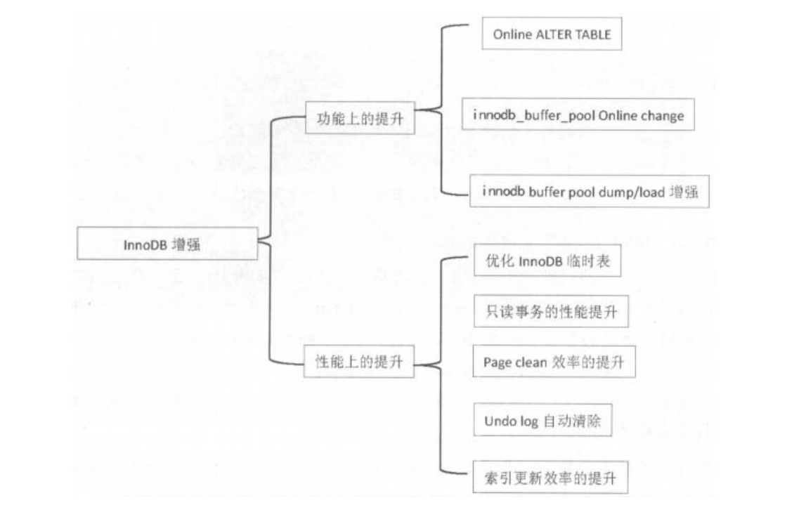

5.1. 01.MySQL5.7新特性¶
InnoDB存储引擎的增强 
5.1.1. 1、Online ALTER TABLE¶
支持索引重命名
alter table talbe_name rename index old_index_name to new_index_name;
支持在线调整varchar列大小
alter table t1 algorithm=inplace, change column c1 c1 varchar(255);
#不支持缩减长度，分区间0~255，256~更大，不能跨区间调整，不支持的条件使用copy算法
5.1.2. 2、innodb_buffer_pool 在线修改¶
set global innodb_buffer_pool_size=1073741824;
#128MB的整数倍
帐户密码自动过期策略，密码过期必须强制进行修改
default_password_lifetime =90 #90天后过期
sys库用来诊断问题 了解哪些语句使用了临时表，哪个用户请求了最多的IO，哪个线程占用了最多的内存，哪些索引是无用索引等 以host开头的视图，记录主机相关统计信息
以innodb开头的视图，记录innodb buffer相关信息
以io开头的视图，记录IO相关信息，如等待IO、IO使用等
以memory开头的视图，记录各个维度的内存使用情况
metrics视图，记录数据库内部统计数值
processlist和session视图，记录连接会话相关信息
以schema开头的视图，记录表统计信息
以statement开头的视图，统计用户执行语句、IO使用等信息
以user开头的视图，统计用户执行语句、IO使用等信息
以wait开头的视图，记录等待事件相关情况
查看数据库中索引使用情况
select index_name,rows_selected,rows_inserted,rows_deleted,rows_updated from schema_index_statistics where table_schema='DB_name' and table_name='**' and index_name='**';
查看数据库中冗余索引
select * from sys.schema_redundant_indexes;
查看数据库中未使用到的索引
select * from sys.schema_unused_indexes;
查看IO使用最多的表
select * from io_global_by_file_by_bytes limit 1;
查看实例消耗的内存
select * from sys.memory_global_tatal;
查看每个库占用多少buffer pool
select * from innodb_buffer_stats_by_schema;
前5位占用最多buffer pool表
select * from innodb_buffer_stats_by_table order by pages desc limit 5;
设置查询SQL超时
max_execution_time 防止因一条SQL语句的长时间执行，导致数据库雪崩
show variables like '%max_execution_time%';
执行计划增强
查看正在执行的SQL线程号
show full processlist
查看当前语句的执行计划
explain for connection **
in语句子查询优化，in查询能够使用index range scan方式
union all不再产生临时表